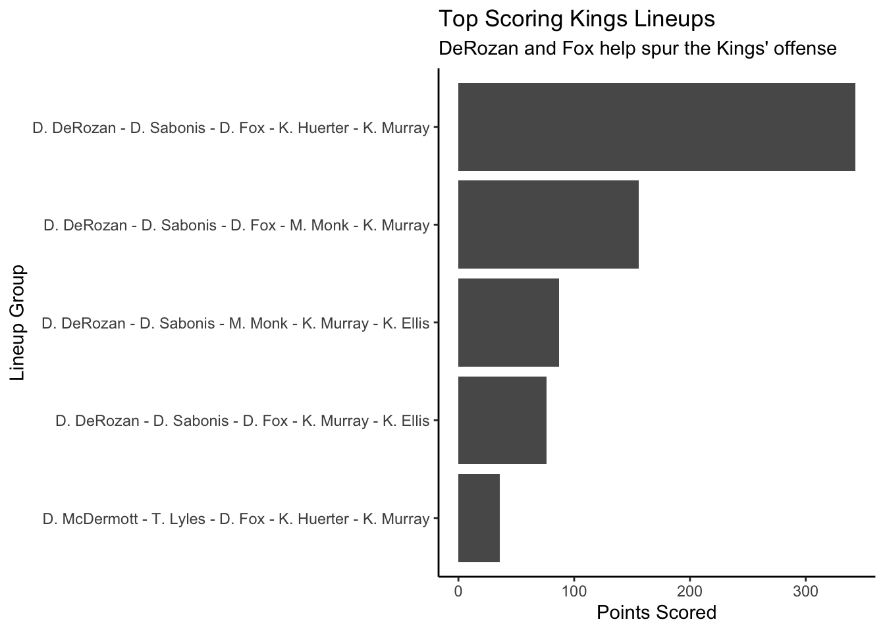

Code
library(tidyverse)
library(hoopR)The Sacramento Kings are one of the best scoring teams in the NBA. They average almost 117 points through their first 15 games, the fourth best mark in the Western Conference.
DeMar DeRozan and De’Aaron Fox are two of the best scorers so far this year. Fox is averaging almost 29 an outing, the fifth best in the league, and DeRozan is in the top-25 with 23 points a game. When these two on on the floor at the same time, the Kings are at their point-scoring best.
library(tidyverse)
library(hoopR)team_id <- 1610612758
lineups <- nba_leaguedashlineups(season = "2024-25")
current <- lineups[[1]]
current <- current |>
mutate(across(6:57, ~ as.numeric(as.character(.))))
current_kings <- current |> filter(TEAM_ID == team_id)The Kings’ highest-scoring group of five players has scored a collective 343 points together. DeRozan and Fox team up on this group, as they do in three of the top five. In the second best point-scoring lineup, which features DeRozan and Fox, has scored 156 points in 15 games.
current_kings_pts <- current_kings |>
arrange(desc(PTS)) |>
select(GROUP_NAME, PTS) |>
top_n(5)Selecting by PTSggplot() +
geom_bar(
data=current_kings_pts,
aes(x=reorder(GROUP_NAME, PTS),
weight=PTS)) +
labs(
title="Top Scoring Kings Lineups",
subtitle = "DeRozan and Fox help spur the Kings' offense",
x="Lineup Group",
y="Points Scored") +
theme_classic() +
coord_flip()
DeRozan and Fox team up to contribute the most points in three of the top five highest-scoring lineups. But they score more two-point field goals than three-point shots.
Kevin Heurter and Keon Ellis are vital to the Kings from deep.
When Heurter is on the floor, his two different lineup groups made 29 and seven 3-pointers. In the fifth-best scoring group, the seven 3-pointers is a third of the group’s total made field goals.
For Ellis, he gets the job done from range when Heurter is on the bench. In the third-highest scoring group, he’s helped contribute to seven made 3-pointers. Ellis is one of the best deep-range shooters in the league, hitting 43 percent so far this year.
current_kings_fg <- current_kings |>
group_by(GROUP_NAME, PTS) |>
filter(PTS >= 36) |>
summarise(
SeasonFG = sum(FGM),
SeasonFG3 = sum(FG3M))`summarise()` has grouped output by 'GROUP_NAME'. You can override using the
`.groups` argument.fgwide <- current_kings_fg |>
pivot_longer(
cols=starts_with("Season"),
names_to="Type",
values_to="FieldGoals")
ggplot() +
geom_bar(
data=fgwide,
aes(x=reorder(GROUP_NAME, FieldGoals),
weight=FieldGoals,
fill=Type)) +
coord_flip() +
labs(
title="Kings Scoring By Shot Type",
subtitle = "A majority of the Kings' shots are from two-point range",
x="Lineup Group",
y="Type of Field Goal") +
theme_classic()
The Kings’ offense is led by two of the best scorers in the league. In terms of points scored, they contribute the most when on the floor at the same time.
Huerter and Ellis take care of shooting the deep ball when either DeRozan or Fox are sitting. The Kings score more from close range, but the pair of guards are curcial shooting 3-pointers.
The season is still at its beginning, but the Kings have a clear lineup that is the preferred way to line up. The first group of five have scored over 300 points together, led by DeRozan and Fox.